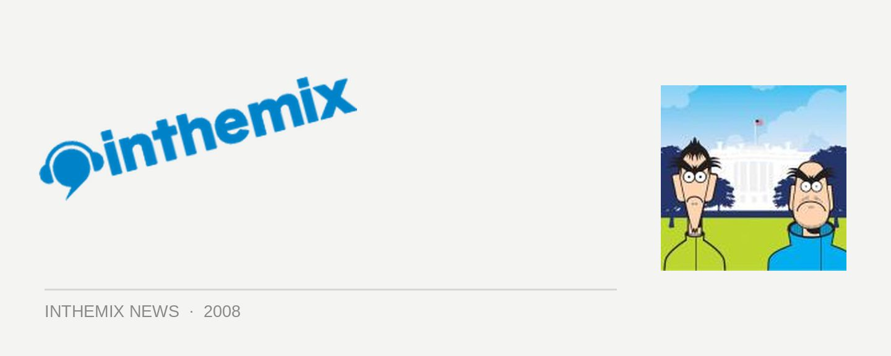

Evil 9 join Future Music Festival lineup
Brighton-based duo Evil 9 would have to be one of the most revered names in breakbeat production – ever. And praised be the lord, because they’ve got a new album due out later this year and they’ll be joining the huge amount of top-shelf breaks DJs who’ve graced our shores in the last couple of weeks alone – they’ll be here to play the Future Music Festival in March.
Only a couple of years ago, it seemed like every breaks DJ on the planet was singing the praises of Evil 9. It was that rockin’ club sound, combined with an earthy, organic feel that you just couldn’t go past, and Adam Freeland certainly liked them a lot: he promptly signed them to his Marine Parade, and his famous Essential Mix of ’03 was nearly exclusively made up of Evil 9 tunes. The album You Can Be Special Too went on to clean up at the Breakspoll Awards and their subsequent Y4K and FabricLive compilations were much-loved by many.
They’ve been lying low the last little while, if only for the fact that they’ve been holed up in the studio working on their follow up album! In the meantime they’ve tided us over with their remix of UNKLE’s latest single Hold My Hand, and we’ll be able to check out what they’re all about these days when they make it back in March…
Check out our Full Coverage page for heaps of Future Music Festival news, interviews and DJ mixes. And have a squiz below at the footage of Evil 9 playing live in Manchester last year…